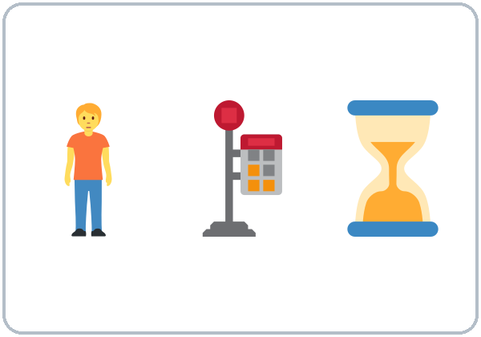
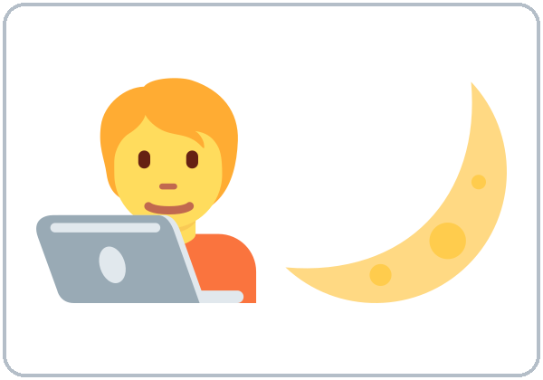
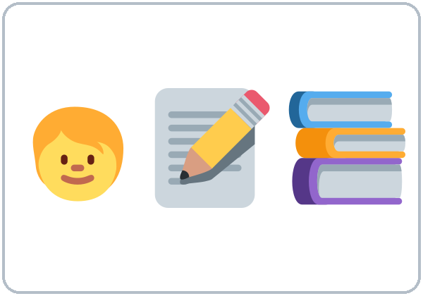
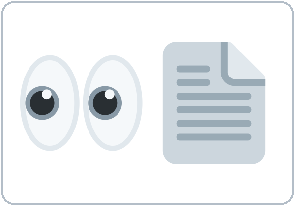
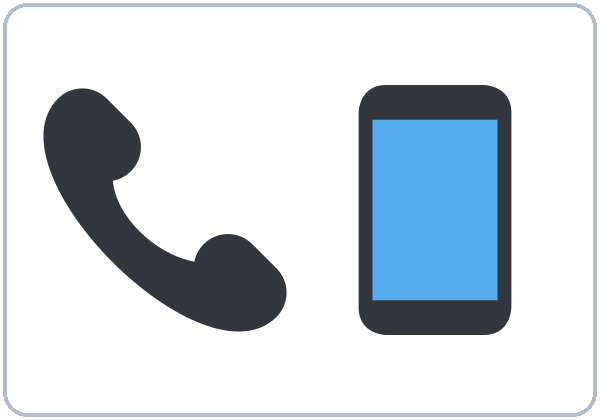
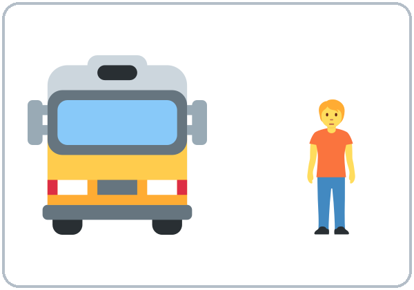
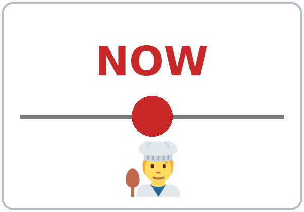
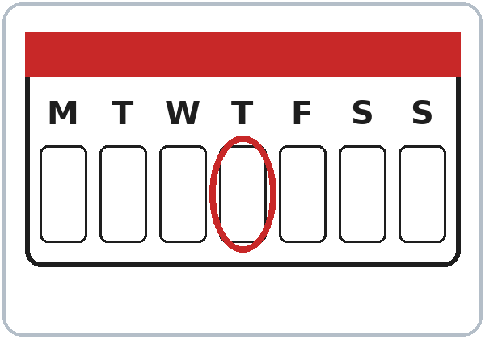
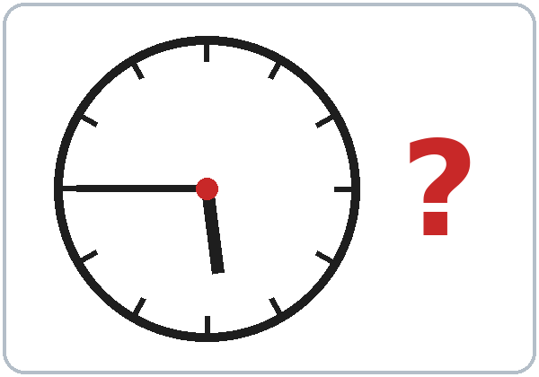

Lesson 4 · Right Now
Student
New Words
Student Page 4 · Week 4
Look. Listen. Repeat. ★ = most important words.











Listening
Listen: the conversation plays twice.
Listen to Rosa and Sam on the phone.
A. Listen. Circle the answer.
- Sam is cooking / sleeping / driving.
- Rosa is at home / at the bus stop / at work.
- It's 5:15 / 5:45 / 6:15.
B. Listen again. Check ✓ True or False.
| True | False | |
|---|---|---|
| 1. Rosa's daughters are doing their homework. | ☐ | ☐ |
| 2. Rosa's husband is watching TV. | ☐ | ☐ |
| 3. Rosa is coming to class tonight. | ☐ | ☐ |
| 4. Sam doesn't have the homework page. | ☐ | ☐ |
C. Listen again. Write the missing word.
- I'm ____________ dinner.
- What ________ you doing?
- They're ____________ their homework.
- The bus ________ coming now.
Grammar
Grammar Box 1: What are you doing?
Choose one word from each column. Read across.
| What | are | you | doing? |
| What | is | he / she | doing? |
| What | are | they | doing? |
| I'm | cooking. / waiting for the bus. / watching TV. |
| He's / She's | working late. / calling a friend. |
| They're | doing homework. / playing. |
Grammar Box 2: Yes/No questions
| Are | you | coming? / working today? |
| Is | he / she | cooking? / working late? |
| Are | they | sleeping? / doing homework? |
| Yes, | I | am. |
| No, | I'm | not. |
| Yes, | he / she | is. |
| No, | he / she | isn't. |
| Yes, | they | are. |
| No, | they | aren't. |
Grammar Box 3: Telling time
| What time | is | it? |
| It's | five forty-five. / six o'clock. / seven fifteen. |
Sentences: positive and negative
| Person | ✔ Positive | ✘ Negative |
|---|---|---|
| I | I'm cooking. | I'm not cooking. |
| He / She / It | She's waiting. | She isn't waiting. |
| You / We / They | They're playing. | They aren't playing. |
Questions and answers
Q: How do I talk about something happening right now?
A: Use am / is / are + verb-ing. I'm cooking. She's waiting.
Q: Can I leave out am / is / are?
A: No. ✗ I cooking. ✓ I'm cooking.
Q: What's the difference between I cook and I'm cooking?
A: I cook = every day, a routine. I'm cooking = right now.
| RIGHT NOW: am/is/are + -ing | EVERY DAY: simple present |
|---|---|
| I'm cooking right now. | I cook every day. |
| She's working late today. | She works at a hotel. |
| Words: now, right now, today, at the moment | Words: every day, usually, always, on Mondays |
Q: Is What do you do? the same as What are you doing?
A: No! What do you do? = What's your job? What are you doing? = What are you doing right now?
Q: How do I spell the -ing?
A: The same rules as Lesson 3: cook → cooking, make → making, shop → shopping.
Common mistakes
| ✗ Don't say | ✓ Say |
|---|---|
| I cooking now. | I'm cooking now. |
| She is work today. | She is working today. |
| What you are doing? | What are you doing? |
| I'm cooking every day. | I cook every day. |
Homework
Homework (10 minutes)
At 3 different times this week, write what you and your family are doing: It's 8:00 PM. I'm washing the dishes. My son is watching TV. My husband is working. Bring your 3 "photos in words" next week. (Lesson 5's Opening Talk uses them!)
My homework
Teacher
At a glance
Objectives: learners can…
- say what people are doing now (am/is/are + -ing)
- ask What are you doing?
- tell the difference between "now" (present continuous) and "every day" (simple present)
- review telling time
Materials
- Student Page 4
- 10 action pictures (or a busy street picture)
- "Now or Every Day?" sentence cards
- a toy or real phone for role plays
- clock face
L4_listening.mp3- Prep time: 20 min.
Key vocabulary (with pictures in the Student Workbook)
waiting (for the bus), cooking, working late, doing homework, watching TV, looking at, calling, coming, right now, today; What time is it? It's five forty-five.
Clock-time plan
Core = 6:00–6:45 and 7:00–7:15. Everything after 7:15 is optional ("If time").
| Time | Step | Min | Grouping (15 / 7–8) | If running behind |
|---|---|---|---|---|
| 6:00–6:10 | Opening Talk + Homework Check (same group): "What do you love doing on weekends? What do you hate doing?" (answer Me too / Me neither / Really?). Then share 2 homework sentences; vote for the funniest | 10 | Groups of 3–4 / whole group | Skip the vote; teacher collects homework |
| 6:10–6:18 | New Words: picture page + Charades ("You're cooking!") | 8 | 2 teams / 1 team | Teach the ★ words; 3 charades only |
| 6:18–6:30 | Listening + "Say it" | 12 | Individuals → pairs | Skip the third play; do Task C together |
| 6:30–6:45 | Grammar Q&A: present continuous; now vs. every day, then a short Picture Talk | 15 | Whole class, then pairs | Do the Q&A + mistakes table only; Picture Talk moves to "If time" |
| 6:45–7:00 | BREAK | 15 | ||
| 7:00–7:10 | Talk Time: Phone Call Role Play ("What are you doing?") | 10 | Pairs back to back | One call each (no partner switch) |
| 7:10–7:15 | Exit Ticket + Homework | 5 | Never skip | |
| 7:15–7:30 | If time (in this order): ① Pronunciation: contractions + fifteen / fifty (5) ② Picture Talk (5) ③ "Now or Every Day?" card sort race (10) | 0–15 | Optional |
Step by step
Step 1 · 6:00–6:10 · Opening Talk + Homework Check · 10 min
- Grouping: groups of 3–4 (15) / whole group (7–8). Same group for both parts.
- Minutes 0–5: "What do you love doing on weekends? What do you hate doing?" Answer with Me too / Me neither / Really?
- Minutes 5–10: each person shares 2 homework sentences about other people; the group votes for the funniest.
- Teacher: correct 2 sentences on the board.
- If behind: skip the vote.
Step 2 · 6:10–6:18 · New Words · 8 min
- Grouping: 2 teams (15) / 1 team (7–8).
- Do: New Words page: point, say, repeat.
- Charades: a learner mimes an action; the class says "You're cooking!"
- If behind: teach the ★ words and do 3 charades.
Step 3 · 6:18–6:30 · Listening + "Say it" · 12 min
- Grouping: individuals → pairs.
- Before you listen: show a picture of a woman at a bus stop on the phone: "Who is she calling? Why?"
- Listen 1 → Task A (circle). Listen 2 → Task B (true/false). Listen 3 → Task C (fill in).
- Ask: "Is Rosa waiting for the bus every day or right now?" (right now)
- "Say it" (1–2 min): repeat "I'm cooking dinner. What are you doing?"
- If behind: skip the third play.
Step 4 · 6:30–6:45 · Grammar: present continuous; now vs. every day · 15 min
- Grouping: whole class, then pairs.
- Say: "For something happening right now, use am / is / are + verb-ing. For every day / usually, use the simple present."
- Board: a timeline with a dot labeled NOW (continuous) and X X X marks (every day).
- Grammar Box + Q&A: learner reads Q → class guesses → read A → board example.
- Check: "I'm cooking: now or every day?" • "She works at night: now or every day?" • "Is I cooking OK?" (No: I'm cooking.)
- Short Picture Talk (last 5 min): pairs describe a busy picture ("The man is waiting."); B points to the person.
- If behind: skip Picture Talk.
Break · 6:45–7:00 · 15 min
- Set chairs back to back for the phone calls during the break.
Step 5 · 7:00–7:10 · Talk Time: Phone Call Role Play · 10 min
- Set-up: pairs sit back to back (like a real phone call: no lip reading!).
- Card A: "You're at the bus stop. The bus is late." Card B: "You're at home cooking. Your kids are doing homework."
- Frame: Hi, it's ___. What are you doing? / I'm ___. Where are you? / I'm ___.
- Then: switch cards, then switch partners. (15: 7 pairs + a 3-person "conference call." 7–8: everyone does 3 calls.)
- If behind: one call each.
Step 6 · 7:10–7:15 · Exit Ticket + Homework · 5 min · NEVER SKIP
- Exit ticket: "What is your family doing right now?" (one sentence)
- Homework: explain it and do the first "photo in words" together.
If time · 7:15–7:30 · pick in this order
- ① Pronunciation (5 min): contractions I'm, she's, they're (short and fast). fifteen (fif-TEEN) vs. fifty (FIF-ty). Pairs: A says a time, B points to it on the clock.
- ② Picture Talk (5 min) if it was skipped.
- ③ "Now or Every Day?" card sort (10 min): teams sort cards into NOW (He's sleeping right now) and EVERY DAY (He sleeps at 10), then fix 3 wrong cards (She cooking now → She's cooking now).
Listening script: L4_listening.mp3 (about 1:40, plays twice)
Audio: play from a phone + small speaker. No speaker? Read the script with a volunteer learner.
Narrator: Lesson four. Listening. Rosa calls Sam on the phone. Listen.
Sam: Hello?
Rosa: Hi, Sam! It's Rosa. Are you busy?
Sam: A little. I'm cooking dinner. What are you doing?
Rosa: I'm waiting for the bus. It's late again!
Sam: Oh no. What time is it?
Rosa: It's five forty-five. Class starts at six.
Sam: Where are your daughters?
Rosa: They're at home. They're doing their homework. My husband is working late today.
Sam: Are you coming to class tonight?
Rosa: Yes, I am! That's why I'm calling. Do you have the homework page?
Sam: Yes. I'm looking at it right now.
Rosa: Great! Can you bring it, please?
Sam: Sure, no problem.
Rosa: Oh! The bus is coming now. See you at six!
Sam: See you!
Answer key
- Task A: 1 cooking, 2 at the bus stop, 3 5:45.
- Task B: 1 T, 2 F (he's working late), 3 T, 4 F (he has it / he's looking at it).
- Task C: cooking; are; doing; is.
Teacher notes
- Rosa and Sam are the same characters as in Lesson 1. Point this out; learners enjoy following them.
- Typical mistake from Spanish speakers: dropping am/is/are (I cooking), because Spanish often uses one verb word for "now." Point to the 'm every time, and point learners to the Spanish note on their Grammar page.
- "Stative" verbs (like, know, want) usually don't take -ing. Don't teach this rule now. If someone says I'm liking it, just recast it: "Oh, you like it!"